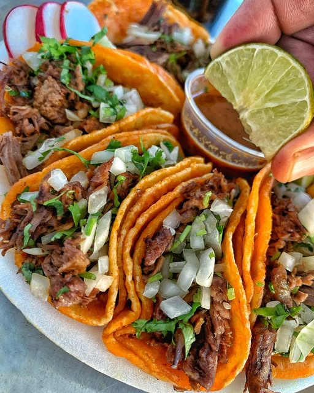

"Tacos al estilo de Tijuana" (TJ-style tacos) are know for their bold flavors, fresh ingredients and street style authenticity. Today, we will learn to re-create Tacos de Adobada(Al Pastor) Tacos. Here is the recipe that will blow your taste buds away:
Marinating the meat (Adobada):
For the Tacos
Salsa Roja (Red Sauce):
p.s one can use store bought sauce but this homemade recipe will bring the tacos to new heights ;)
-Soak the dried chilies in hot water for about 10 minutes to soften them.
-Blend the chilies, garlic, orange juice, pineapple juice, vinegar, achiote paste, and spices until smooth.
-Pour the marinade over the pork, making sure every piece is coated. Cover and let it marinate for at least 4 hours (overnight is best).
Roast the Roma tomatoes on a dry pan until the skin blackens. Blend the roasted tomatoes with the softened guajillo and árbol chilies, garlic, water, and salt until smooth.
Grill Method:
Preheat your grill to medium-high heat.
Cook the pork slices for 3-4 minutes per side until slightly charred.
Stovetop Method:
Heat 1 tablespoon of oil in a large pan over medium-high heat.
Cook the pork slices in batches, making sure they get a nice sear.
Once the pork is done, let it rest for 5 minutes, then chop it into small pieces.